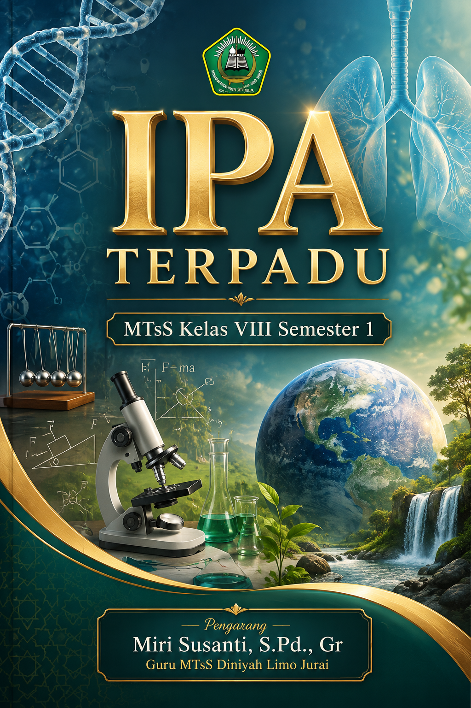

Pendekatan Integratif Sains Modern untuk Membangun Literasi Sains dan Keterampilan Berpikir Kritis Siswa MTsS.
Jelajahi Isi BukuBuku ini dirancang sebagai panduan komprehensif pembelajaran Ilmu Pengetahuan Alam (IPA) Terpadu yang mengintegrasikan konsep Biologi, Fisika, dan Kimia dalam konteks kehidupan sehari-hari. Dengan 16 pertemuan terstruktur, buku ini tidak hanya menyajikan teori, tetapi juga analisis kasus nyata, eksperimen virtual, dan refleksi kritis untuk mempersiapkan siswa menghadapi tantangan abad ke-21.
Klik "Buka Materi" untuk mengakses halaman detail setiap pertemuan. Setiap topik dilengkapi dengan video pembelajaran interaktif.
Teori sel, struktur sel (prokariotik & eukariotik), dan fungsi mendalam organel sel (mitokondria, ribosom, badan Golgi).
Zat gizi (makro & mikro), organ pencernaan manusia, dan proses mekanik serta kimiawi pencernaan dari mulut hingga usus halus.
Analisis gangguan seperti GERD, mag, diare, konstipasi, serta upaya preventif dan kuratif menjaga kesehatan mikrobioma usus.
Komponen darah: plasma, eritrosit, leukosit, trombosit, dan fungsi spesifik masing-masing dalam homeostasis tubuh.
Organ peredaran darah, mekanisme sistolik/diastolik, sistem ABO & Rhesus, serta prinsip keamanan transfusi darah.
Hipertensi, aterosklerosis, jantung koroner, stroke, serta gaya hidup preventif (diet DASH, olahraga aerobik).
Anatomi saluran pernapasan, mekanisme inspirasi-ekspirasi (perut dan dada), dan pertukaran gas di alveolus.
Evaluasi komprehensif materi Pertemuan 1 s.d. 7. Meliputi tes formatif, analisis data percobaan virtual, dan studi kasus terintegrasi.
Frekuensi pernapasan, volume udara (tidal, komplementer, suplementer, kapasitas vital), serta gangguan seperti Asma dan Emfisema.
Struktur dan fungsi ginjal (nefron), kulit, paru-paru, dan hati sebagai organ ekskresi, sekresi, dan defekasi.
Batu ginjal, gagal ginjal, nefritis, keringat berlebih, dan upaya menjaga kesehatan (hidrasi, diet rendah purin).
Konsep gaya resultan, Hukum I Newton (Inersia), Hukum II Newton (F=m.a), dan penerapannya dalam gerak lurus.
Hukum Aksi-Reaksi, pasangan gaya, dan analisis penerapannya dalam kehidupan sehari-hari (berjalan, berenang, roket).
Pengertian usaha (W=F.s), energi kinetik, energi potensial gravitasi, dan Hukum Kekekalan Energi mekanik.
Jenis-jenis pesawat sederhana (tuas, katrol, bidang miring), keuntungan mekanis (KM), dan penerapannya dalam teknologi.
Evaluasi sumatif akhir mencakup seluruh materi Semester I, dengan penekanan pada pemecahan masalah (problem-solving) sains terintegrasi.
Tabel ringkasan komparatif untuk mempermudah pemahaman perbedaan mendasar antar konsep kunci dalam buku ini.
| Aspek Perbandingan | Peredaran Darah Besar (Sistemik) | Peredaran Darah Kecil (Pulmonal) |
|---|---|---|
| Titik Awal | Bilik Kiri (Ventrikel Sinister) | Bilik Kanan (Ventrikel Dextra) |
| Titik Akhir | Serambi Kanan (Atrium Dextra) | Serambi Kiri (Atrium Sinister) |
| Organ yang Dilewati | Seluruh tubuh (kepala, anggota badan, organ dalam) | Paru-paru (Pulmo) saja |
| Kandungan Darah | Kaya Oksigen (O2) saat keluar, kaya CO2 saat kembali | Kaya CO2 saat keluar, kaya O2 saat kembali |
| Tujuan Utama | Mengedarkan nutrisi dan O2 ke sel tubuh, mengangkut sisa metabolisme | Oksigenasi darah (pertukaran CO2 dengan O2 di alveolus) |
| Hukum Newton | Nama Lain | Rumus / Prinsip | Contoh Penerapan Nyata |
|---|---|---|---|
| Hukum I Newton | Hukum Inersia (Kelembaman) | ΣF = 0 (Benda diam tetap diam, bergerak tetap bergerak lurus beraturan) | Penumpang terdorong ke depan saat mobil direm mendadak. |
| Hukum II Newton | Hukum Percepatan | ΣF = m × a (Percepatan berbanding lurus dengan gaya, berbanding terbalik dengan massa) | Mendorong mobil mogok (massa besar) membutuhkan gaya lebih besar daripada mendorong sepeda. |
| Hukum III Newton | Hukum Aksi-Reaksi | Faksi = -Freaksi (Gaya selalu berpasangan, sama besar, berlawanan arah) | Kaki mendayung air ke belakang (aksi), perahu bergerak ke depan (reaksi). |
Materi dalam buku ini disusun berdasarkan rujukan literatur sains yang valid, mutakhir, dan sesuai dengan kurikulum nasional.